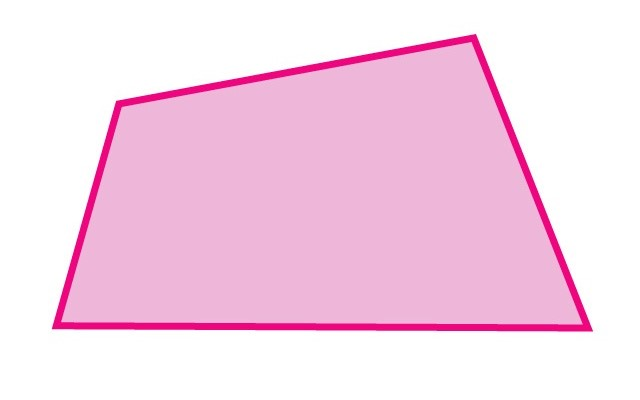

Formas Geométricas
Formas geométricas são os formatos dos objetos ao nosso redor. A Geometria (“ciência de medir terras”, do grego geometrein) é o ramo da Matemática que estuda as formas geométricas. Essa área do conhecimento analisa as medidas, o tamanho e a posição das formas no ambiente bidimensional e tridimensional.
Formas Geométrias
Círculo
É o conjunto de pontos resultantes da união entre uma circunferência e seus pontos internos. Em outras palavras, o círculo é a área cuja fronteira é uma circunferência.Coroa do Círculo
É uma região do plano formada por duas circunferências de mesmo centro, mas raios diferentes, um maior e outro menor. A circunferência de raio r e circunferência de raio R, sendo R > r.
Tronco da Pirâmide
É o sólido geométrico obtido pela secção transversal de uma pirâmide qualquer, a qualquer altura.As suas bases (face superior e face inferior) são formadas por 2 quadrados.Quadrado
É um polígono convexo que possui quatro lados. Em outras palavras, é uma figura geométrica plana que possui quatro lados congruentes e quatro ângulos retos.
Hexágono Regular
É uma das várias figuras da Geometria Plana, aquelas que apresentam bidimensionalidade. Sua principal característica é ser um polígono de 6 lados.Retângulo
Possui propriedades herdadas por ser um quadrilátero e também propriedades específicas. Para saber a área de um retângulo, calculamos o produto da base pela altura.

Trapezoide Irregular
Trata-se de um polígono que possui quatro lados, sendo dois lados paralelos (conhecidos como base maior e base menor) e dois não paralelos (lados oblíquos).